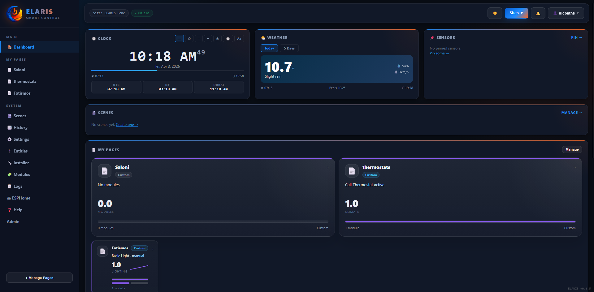
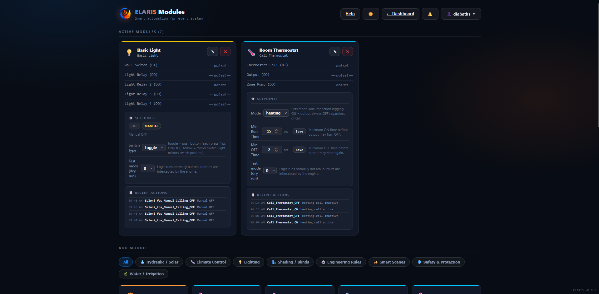
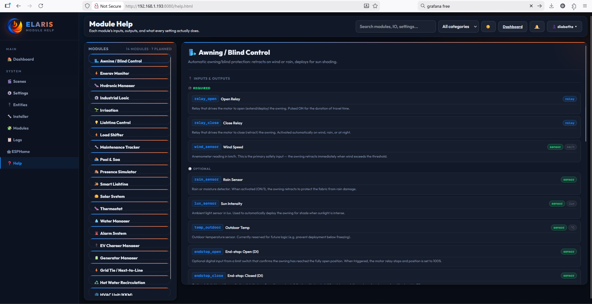
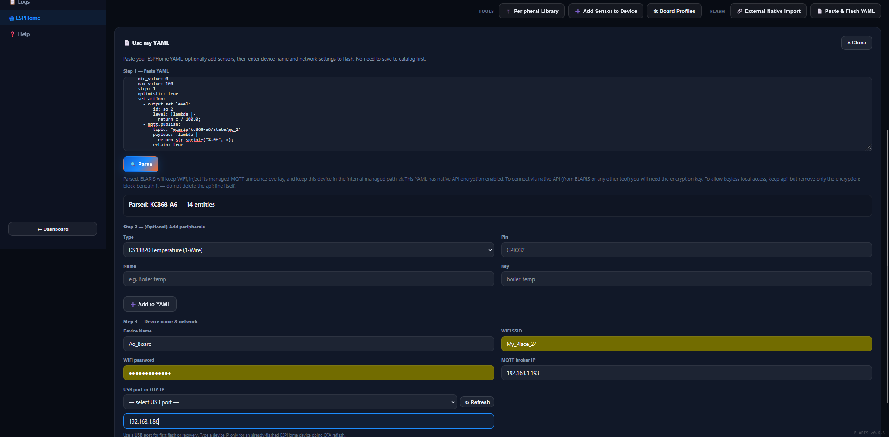
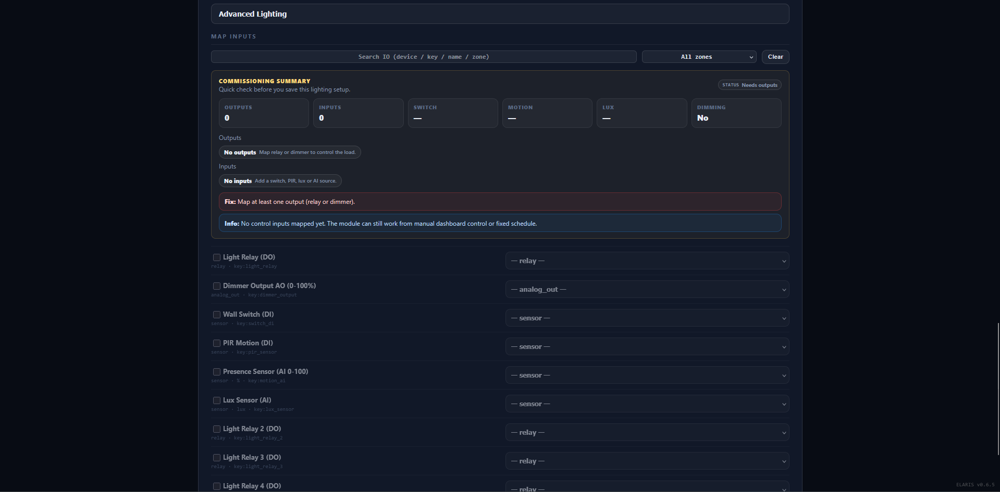
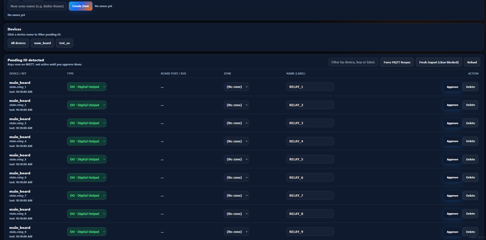
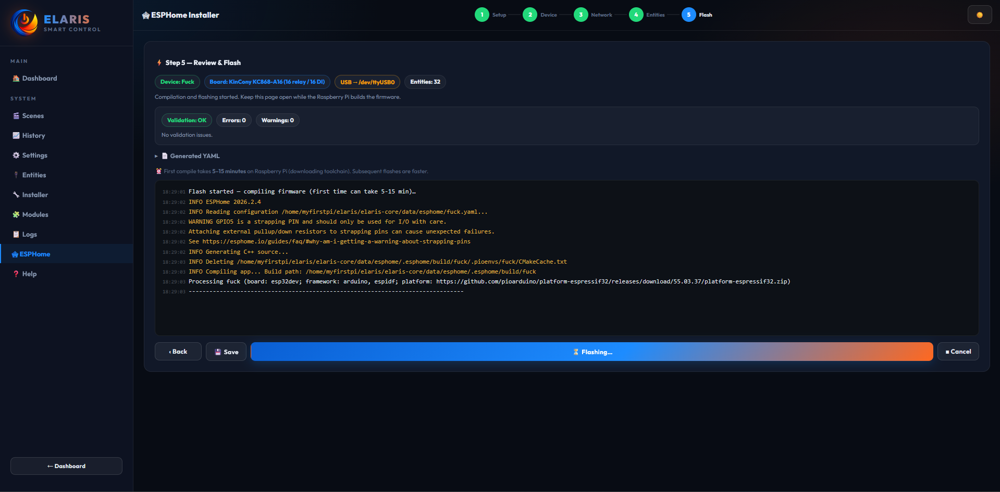

Dashboard
Real-time clock with 7 display styles, weather from Open-Meteo, one-tap scenes, recent events and system health. WebSocket pushes updates without page refresh.
ELARIS connects hardware onboarding, entity management, module commissioning and real-time operation inside one platform. Here is what actually ships today.





Every module declares its required and optional IO, setpoints with defaults and ranges, and a help description. Installers see what they need before mapping.
Map entities to module inputs with drag or dropdown. The platform validates completeness and shows a readiness score. No module runs with missing required IO.
Each instance has its own settings: PIR timeout, lux thresholds, schedule times, zone setpoints. Settings persist in SQLite and survive restarts.
Modules can be locked by engineers to prevent accidental changes. User control permissions are per-module, per-site. Roles: User, Engineer, Admin.


ESPHome boards publish config to MQTT on boot. ELARIS receives the JSON, extracts entities (relays, DIs, sensors), and creates a device record with board profile, transport type and status.
New channels land in a staging queue. They are not yet part of any module or automation. This prevents raw device channels from accidentally triggering logic.
Raw channels like di_1 become "Front door sensor" in zone "Ground floor". The entity registry is the single source of truth for all module mappings.
Entities are mapped into domain modules with visual validation. The platform checks for conflicts (same entity mapped to two modules) and shows a summary before saving.
5-step wizard: transport (USB/OTA), device name, board profile, network config, flash. Real-time compile logs in the browser. Board profiles for KinCony KC868-A/B/F series with pin/bus/entity defaults.
Add BME280, DS18B20, INA219, CCS811, MH-Z19, PZEM-004T and 12+ other sensor types to existing devices without rebuilding the full YAML. The platform injects the peripheral, validates pin conflicts, and pushes OTA.
After an OTA update, new peripherals from the device report land in Pending IO automatically. No manual discovery needed — the device announces what changed.
Devices can be marked as "managed" with custom MQTT topic roots. Native ESPHome topics are skipped for state caching — only the managed elaris/
Raspberry Pi 4 with NVMe recommended. Node.js backend, SQLite database, Mosquitto MQTT. No cloud dependency, no external API calls for core operation.
Three roles: User (sites they're assigned to), Engineer (all sites + device management), Admin (everything + shell console). Session-based auth with CSRF protection.
30-second ping/pong detects dead connections. Dead clients are terminated and cleaned up. No memory leak from silently-dropped TCP connections.